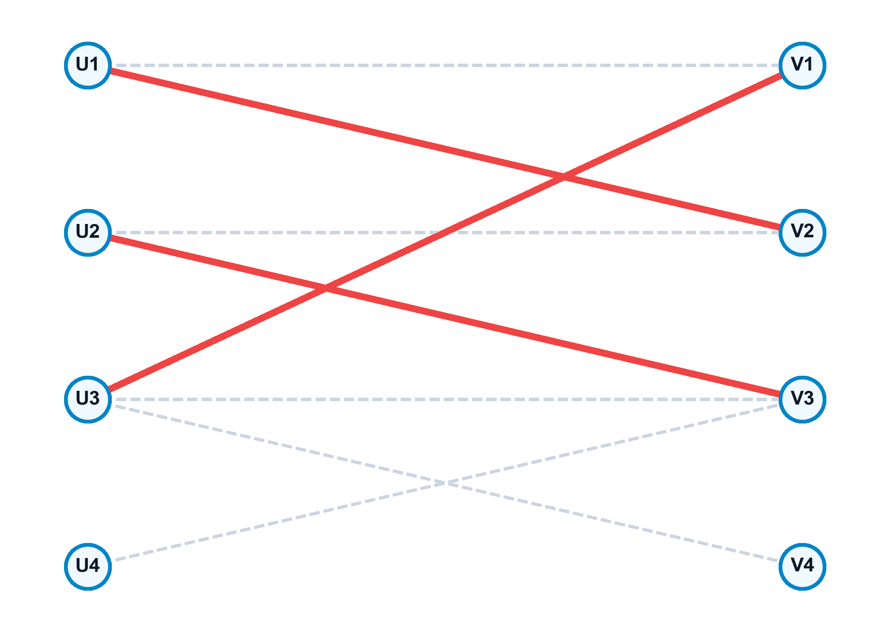

10 Problemas de Emparejamiento (Matching)
El problema de emparejamiento (matching) aborda la selección de un subconjunto de aristas de un grafo de tal manera que ninguna de ellas comparta un vértice común. Esta estructura discreta, en apariencia sencilla, posee una enorme relevancia teórica y práctica en problemas de asignación de tareas a operarios, emparejamiento de alumnos a centros universitarios (como en los algoritmos estables de Gale-Shapley), y enrutamiento en redes complejas, constituyendo una de las áreas más ricas de la optimización combinatoria (Ahuja, Magnanti, y Orlin 1993; Papadimitriou y Steiglitz 1998).
En este capítulo, estudiaremos las definiciones de emparejamientos maximales, máximos y perfectos, la caracterización de optimalidad de Berge basada en cadenas incrementales, la búsqueda mediante árboles alternantes, las relaciones de dualidad de Gallai entre emparejamiento y recubrimiento (covering), el teorema de König-Egerváry para grafos bipartitos y el algoritmo Húngaro para emparejamientos con pesos.
Al finalizar este capítulo, serás capaz de:
- Diferenciar entre emparejamientos maximales, máximos y perfectos, y determinar las condiciones necesarias para la existencia de estos últimos.
- Aplicar el Teorema de Berge para certificar si un emparejamiento dado es de máxima cardinalidad mediante la búsqueda de cadenas de aumento.
- Construir árboles alternantes para identificar de forma algorítmica caminos incrementales en grafos bipartitos y comprender la dificultad introducida por las “flores” en grafos generales.
- Formular y aplicar las relaciones de dualidad de Gallai que ligan las cardinalidades de emparejamiento, recubrimiento de aristas, recubrimiento de vértices y conjunto independiente.
- Utilizar el Teorema de König-Egerváry para resolver problemas de emparejamiento bipartito mediante su equivalencia con el recubrimiento de vértices mínimo.
- Modelar problemas de asignación de máximo coste en Python, implementando y resolviendo modelos de emparejamiento con pesos usando la librería NetworkX.
10.1 Conceptos Fundamentales de Emparejamiento
Sea un grafo simple no dirigido \(G = (V, E)\).
10.1.1 Definición de Emparejamiento
Un subconjunto de aristas \(M \subseteq E\) es un emparejamiento si para todo par de aristas distintas \(e_1, e_2 \in M\) se cumple que no comparten ningún nodo (\(e_1 \cap e_2 = \emptyset\)).
- Vértice Saturado (o Emparejado): Un vértice \(v \in V\) que pertenece a alguna de las aristas seleccionadas en \(M\).
- Vértice Insaturado (o Libre): Un vértice \(v \in V\) que no forma parte de ninguna arista de \(M\).
- Emparejamiento Maximal: Un emparejamiento \(M\) tal que no se le puede añadir ninguna arista de \(E \setminus M\) sin violar la condición de emparejamiento.
- Emparejamiento Máximo: Un emparejamiento que tiene la mayor cantidad de aristas posible en el grafo \(G\). Su tamaño se denota por la cardinalidad \(\alpha_E(G)\).
- Emparejamiento Perfecto: Un emparejamiento que satura a todos los vértices del grafo. Si existe, la cardinalidad del emparejamiento es exactamente \(|M| = n/2\) (lo que exige que el número total de nodos \(n\) sea par).

10.1.2 Cadenas Alternantes e Incrementales
Dada una red con un emparejamiento \(M\):
- Cadena Alternante: Una cadena de aristas que pertenecen alternativamente a \(M\) y a \(E \setminus M\).
- Cadena Incremental (o de Aumento): Una cadena alternante cuyos extremos inicial y final son nodos libres (insaturados) con respecto a \(M\).
Un emparejamiento \(M\) en un grafo \(G\) es máximo si y solo si el grafo no contiene ninguna cadena incremental con respecto a \(M\).
Demostración (Sentido necesario): Supongamos que existe una cadena incremental \(P = (v_0, v_1, \dots, v_k)\) con respecto a \(M\). Al ser incremental, las aristas del camino alternan entre pertenecer a \(E \setminus M\) y a \(M\), empezando y terminando con aristas libres (fuera de \(M\)). Por tanto, el número de aristas del camino que no están en \(M\) es exactamente una más que las que sí están en \(M\). Definimos la diferencia simétrica \(M' = M \oplus P = (M \setminus P) \cup (P \setminus M)\). Es directo comprobar que \(M'\) constituye un emparejamiento factible en \(G\) y su tamaño es \(|M'| = |M| + 1\), lo que contradice que \(M\) fuera de tamaño máximo. Por tanto, si el emparejamiento es máximo, no pueden existir cadenas incrementales. \(\blacksquare\)
10.2 Búsqueda mediante Árboles Alternantes
Para localizar de forma algorítmica las cadenas incrementales, construimos una estructura jerárquica de búsqueda denominada árbol alternante:
- Se selecciona un vértice libre como nodo raíz.
- Las aristas que descienden desde niveles pares del árbol hacia niveles impares corresponden a aristas no emparejadas (\(E \setminus M\)).
- Las aristas que van desde niveles impares hacia niveles pares corresponden a aristas emparejadas (\(M\)).
- Resolución: Si durante la exploración del árbol se encuentra un nodo vecino que está libre, se ha identificado una cadena incremental entre la raíz y dicho nodo.
- Flores (Blossoms): En grafos bipartitos, el árbol alternante se construye sin ciclos impares. En grafos generales, la presencia de ciclos de longitud impar (denominados flores) puede bloquear la búsqueda del algoritmo. Jack Edmonds resolvió este problema en 1965 con su algoritmo de contraer las flores en un supernodo durante la búsqueda de caminos y expandirlas posteriormente al actualizar el emparejamiento.
10.3 Problemas de Recubrimiento en Grafos
Estudiamos la relación entre seleccionar aristas independientes y cubrir los componentes del grafo.
10.3.1 Definición de Recubrimientos y Conjuntos Independientes
- Recubrimiento de Vértices (Vertex Cover): Un subconjunto de nodos \(V_C \subseteq V\) tal que toda arista del grafo tiene al menos uno de sus extremos en \(V_C\): \[ \{u, v\} \cap V_C \neq \emptyset, \quad \forall \{u, v\} \in E \] El tamaño del recubrimiento de vértices mínimo se denota por \(\alpha_V(G)\).
- Recubrimiento de Aristas (Edge Cover): Un subconjunto de aristas \(E_C \subseteq E\) tal que todo vértice del grafo es incidente en al menos una arista de \(E_C\). Solo existe si el grafo no tiene nodos aislados. Su tamaño mínimo se denota por \(\beta_E(G)\).
- Conjunto de Vértices Independientes: Un subconjunto de nodos \(I \subseteq V\) tal que no existen aristas que unan nodos de \(I\) entre sí. Su tamaño máximo se denota por \(\beta_V(G)\).
Para cualquier grafo simple conexo \(G = (V, E)\) con \(n\) vértices y sin nodos aislados, se cumplen las siguientes relaciones de conservación:
- Dualidad de Vértices: \[ \alpha_V(G) + \beta_V(G) = n \]
- Dualidad de Aristas: \[ \alpha_E(G) + \beta_E(G) = n \]
Para cualquier grafo bipartito \(G = (V, E)\), la cardinalidad del emparejamiento máximo es igual al número mínimo de vértices necesarios para recubrir todas las aristas: \[ \alpha_E(G) = \alpha_V(G) \]
10.4 Emparejamiento de Máximo Peso y Algoritmo Húngaro
Cuando cada arista \(\{u, v\}\) tiene asociado un beneficio o peso \(w_{uv} \ge 0\), el problema de emparejamiento de peso máximo busca maximizar la recompensa total acumulada: \[ \max \sum_{e \in M} w(e) \quad \text{s.t. } M \text{ es un emparejamiento en } G \]
En grafos bipartitos completos donde \(|V_1| = |V_2| = n\), este problema se denomina problema de asignación óptima. Se resuelve de forma exacta mediante el Algoritmo Húngaro (Kuhn-Munkres, 1955), el cual opera sobre el problema dual de programación lineal:
- Asocia un potencial o precio dual \(u_i\) a los nodos de la izquierda y \(v_j\) a los de la derecha.
- Mantiene la viabilidad dual: \(u_i + v_j \le c_{ij}\) (donde \(c_{ij}\) es el coste o peso).
- Busca un emparejamiento perfecto sobre el subgrafo de igualdad formado únicamente por los arcos donde se cumple la igualdad dual con holgura cero: \(u_i + v_j = c_{ij}\).
- Si el emparejamiento no es perfecto, modifica de forma óptima los precios duales para activar nuevas aristas en el subgrafo de igualdad y repite.
10.5 Implementación en Python con NetworkX
El siguiente script construye un grafo bipartito para hallar su emparejamiento de máxima cardinalidad, y resuelve el emparejamiento de máximo peso sobre un grafo general no bipartito:
import networkx as nx
# 1. Emparejamiento de Maxima Cardinalidad en Grafo Bipartito
B = nx.Graph()
nodos_izq = ["U1", "U2", "U3", "U4"]
nodos_der = ["V1", "V2", "V3", "V4"]
# Marcamos la propiedad de biparticion (bipartite=0 o 1)
B.add_nodes_from(nodos_izq, bipartite=0)
B.add_nodes_from(nodos_der, bipartite=1)
# Anadir aristas factibles
aristas_bip = [
("U1", "V1"), ("U1", "V2"), ("U2", "V2"), ("U2", "V3"),
("U3", "V1"), ("U3", "V2"), ("U4", "V3"), ("U4", "V4")
]
B.add_edges_from(aristas_bip)
# Calcular el emparejamiento maximo bipartito
match_bip = nx.bipartite.maximum_matching(B, top_nodes=nodos_izq)
print("Emparejamiento maximo cardinal en grafo bipartito:")
for u, v in sorted(match_bip.items()):
if u in nodos_izq: # Evitar duplicados del diccionario bidireccional
print(f" {u} <-> {v}")
# 2. Emparejamiento de Peso Maximo en Grafo General (No Bipartito)
G = nx.Graph()
aristas_pesos = [
("A", "B", 4), ("A", "C", 5), ("B", "C", 6), ("B", "D", 2),
("C", "D", 3), ("D", "E", 8), ("C", "E", 4)
]
for u, v, w in aristas_pesos:
G.add_edge(u, v, weight=w)
# Calcular el emparejamiento de peso maximo
match_peso = nx.max_weight_matching(G, maxcardinality=False)
print("\nEmparejamiento de Peso Maximo (Grafo General):")
peso_total = 0
for u, v in match_peso:
w = G[u][v]['weight']
peso_total += w
print(f" {u} <-> {v} (peso = {w})")
print(f"Peso acumulado del emparejamiento: {peso_total}")